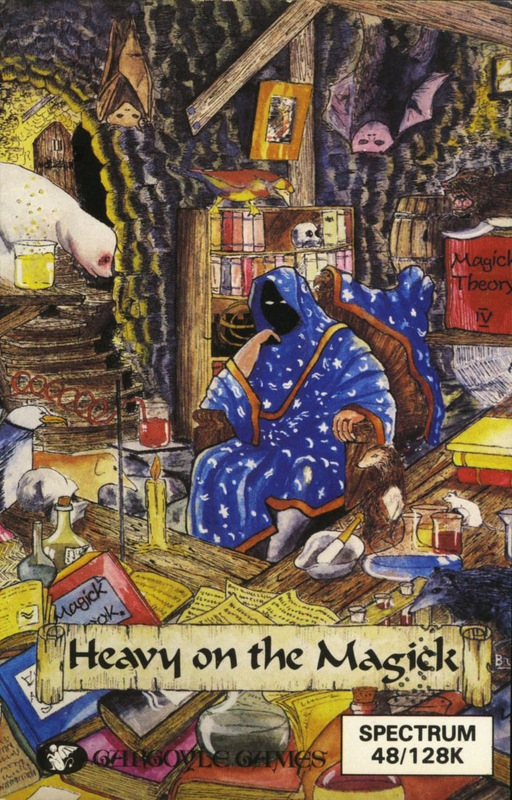
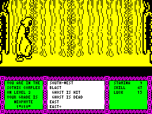

Heavy on the Magick


{kind=link}

| Publisher: | Gargoyle |
| Price: | £9.95 |
| Year: | 1986 |
| Source: | CRASH, Issue 29 |

Music on the Spectrum has never been a matter to crow about, what with the likes of the Commodore, Amstrad and Atari machines tunefully serenading the high street customers, but here Gargoyle have produced an intro tune which improves and becomes more complete the longer you leave it playing on the introduction screens. The player is further seduced by an animated loading screen — the first I can remember seeing. Many of the pictures you will meet during the game are flashed up around the screen as a loading counter ticks down from 750 in the bottom right-hand corner.

status window reveals. On the left, in
the blue window, the exits available
from the current location are revealed,
while Axil’s personal status in terms of
Stamina, Luck and Skill are displayed
The options on loading up are commendable and are an insight into the complexities and depths of the game. Magick 1 sees you start a brand new game, Save Game and Restore Game are the standard options, while Save/Restore Axil (the main character) and Realign Status are welcome additions. This last allows the player to alter the values for Stamina, Skill and Luck randomly attributed to our hero at the start. Pressing the 6 key has the values swapping around from their inherent bias towards a high Stamina, much lower Skill, and very low Luck so that you might prefer and select a high Skill or a high Luck. Typical starting values for Stamina, Skill and Luck are 33, 8, 3 and 35, 12, 4 showing that your total points tally does vary along with their distribution. You always, however, begin with zero experience points, and are saddled with the far from glamorous grade of Neophyte, a very lowly wizard barely competent with spells.
The first frame gives an idea of how all the information in the superb supporting booklet (the best I’ve seen since Lords of Midnight in terms of playing details and imaginative storyline) might be enacted. Axil the Able stands between two tables with what look like, and indeed are, books perched upon each. I say ‘look like’ because herein lies one of the few drawbacks — and a minor one at that — to the playability of this game. The picture is formed by a method Gargoyle have made their own; the screen is formed in memory and blown up onto the screen as a way to conserve memory and so allow a longer and more detailed adventure. Because of this, the scale of the picture is enlarged and the definition is reduced, with the result that individual pixels become conspicuous and objects become that much more difficult to identify. The playability is saved though by the use of the EXAMINE OBJECT command which not only tells you of the nature of the object but in what way it might prove useful or otherwise harmful. Objects can be harmful by being poisonous or by simply draining Stamina by way of their excessive weight.
Watching the first frame for a while familiarises you with the windows of information along the bottom of the screen. The debut location is a good place to do this, as in other localities various nasties suddenly descend upon you making your task, and your very survival, a difficult business. Your character, Axil, stands between the tables in a long cloak which he ruffles impatiently, waiting on your next move. Waiting long enough here you will also notice this rustling of garment actually takes up Stamina as a click, marking the loss of one unit every few minutes, lets you know.
The first frame is quite useful for showing how one or two of the simpler aspects of the game work. The ever-useful EXAMINE OBJECT invoked, as with all commands, by a key word (in this case brought up onto the screen by pressing X) takes Axil behind the desk to the left and tells of a table pitted with woodworm which holds a book. PICK UP BOOK, enacted by pressing P and spelling out BOOK (all words following keywords must be spelled out in full — no easy matter with words like GRIMOIRE knocking around) has Axil on screen picking up the book with one of many superb and life-like animations. Alas, the book is smeared with poison and your Stamina rating takes a quick tumble. (Incidentally, PICK UP object gives ‘You can’t lift the table’)!
The choice of exits at the start is between east and west but in later screens there can be many exits, a little arrow indicating whether any lead up or down, eg NE ↑ would indicate that the NE exit takes you up a level. Another symbol you will meet sooner or later is the flashing of a direction marker, which indicates that a nasty is approaching from that compass point. Apart from directions, the left hand window can also hold information on the level you happen to be in and the objects you are carrying (after picking up or putting down of an object).
One point which I either didn’t quite grasp, or which is a genuine failing, is the inability to speed up the game. Each frame begins with a description of the locality eg ‘You are in the Sothic Complex on Level 2’ which remains on the screen for nine seconds. This is a long time if you want to zip around. Perhaps I just missed the description of the key which speeds up this process in the manual. However, if you know where you are going, you can by-pass readouts by using the multiple entry system whereby words separated by commas and entered as a string are acted upon at once. Separated commands can be interrupted by an attacking monster.
Heavy on the Magick is something that has been promised to the computer games world for some time but until now has never quite materialised. It is an adventure, certainly, but is animated to the extent where it will appeal to a whole spectrum of games players. The incredibly lifelike movements of the main character, and the cuteness of the monsters, should find a very receptive audience just dying to get their hands on this one.
COMMENTS
| Difficulty: | Very playable, not easy to complete |
| Graphics: | Unusual blown up pictures featuring superb animation |
| Presentation: | Smart |
| Input facility: | Keyword and sophisticated multiple entry system |
| Response: | Fast |
| General rating: | An original, animated adventure |
| Atmosphere: | 9 |
| Vocabulary: | 9 |
| Logic: | 9 |
| Value for money: | 9 |
| Overall: | 9 |